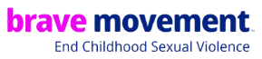
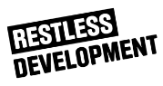
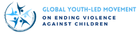
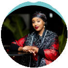
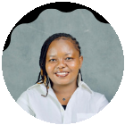

A platform for young people and survivors to shape global action to End Violence Against Children.



An estimated 1 billion children globally experience some form of violence every year. At the same time, more than 110 countries have made over 350 pledges to strengthen efforts to ensure every child is protected. The challenge now is to translate these commitments into sustained action – with young people and survivor leaders at the heart of shaping what comes next.
The Youth and Survivor Summit, which will be held in November 2026 around the Second Global Ministerial Conference on Ending Violence Against Children, is a platform for young people and survivor advocates to lead vibrant, safe discussions with policy makers, donors, civil society and faith-based organisations and call for greater accountability to commitments on Ending Violence Against Children. The Summit will gather policy recommendations from young people and survivor advocates, support survivors and young people to participate in the Ministerial Conference meaningfully, and be a part of centring the voices of young people and those with lived experience in the lead-up to the Ministerial, including by offering online regional and global dialogues to influence the Summit and Ministerial outcomes.
Chrisindah is a policy researcher & digital communication strategist focused on building systems that enable young people to contribute meaningfully to advocacy and decision-making.

Aisha is a human rights advocate working to end FGM, advance the rights and protection of women & girls, and empower young people through community-led solutions.

Morenikejimi is a survivor advocate and award-winning social impact leader with experience advancing sustainable development in underserved communities and among internally displaced persons (IDPs) in Nigeria.
Zahra is an advocate and campaigner working at the intersection of grassroots mobilisation and institutional change, driven by a conviction that the systems meant to protect children too often fail the communities most exposed to harm.
Millicent's work spans youth participation, care experience and environmental governance, including advisory roles with Coram, the Unite Foundation and the Co-Operative Council Innovation Network.
Dianne is a public policy professional and youth advocate with experience in child protection, climate action, gender equality, and youth engagement.
Isabelle is a PhD Researcher in Human Rights at São Paulo State University. Over the past decade, she has led advocacy initiatives to advance gender equality and child protection frameworks, working with civil society, the Federal Senate, and UNFPA.
Favour is a communications strategist and storyteller working at the intersection of child protection, gender justice, and youth engagement. She believes that the stories we tell, and how we tell them, shape both perception and policies.
At the Youth & Survivor Summit, we are committed to creating a safe, inclusive, and respectful environment for all participants, regardless of age, gender, race, ethnicity, sexual orientation, or ability. At Restless Development, alongside our Summit co-organizers, we take safeguarding seriously and work to ensure that every individual feels protected from harm, abuse, or exploitation.
We are committed to ensuring a safe and supportive environment where all young people and survivors can participate, and that all sessions and activities are trauma-informed. All participants, speakers and partners will be invited to attend a safeguarding briefing before the event. During the summit, participants will have access to on-site mental health support and first aid, as well as a wellbeing space to decompress.
Our team is trained to recognize, respond to, and prevent any safeguarding concerns that may arise during our events and online engagements. If you ever feel unsafe or encounter any inappropriate behaviour, please contact one of the Youth & Survivor Summit team members who will be easily identifiable at the venue. If you would like to report anonymously before, during or after the event you can send an email to confidential@restlessdevelopment.org.
You can review our full Safeguarding Policy here. Together, we can foster a culture of safety and empowerment for all.